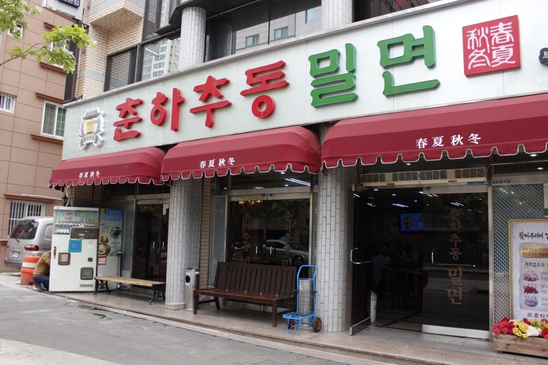
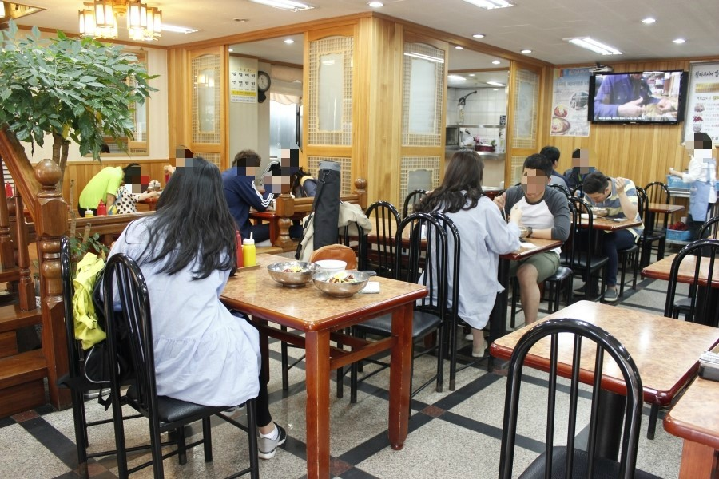
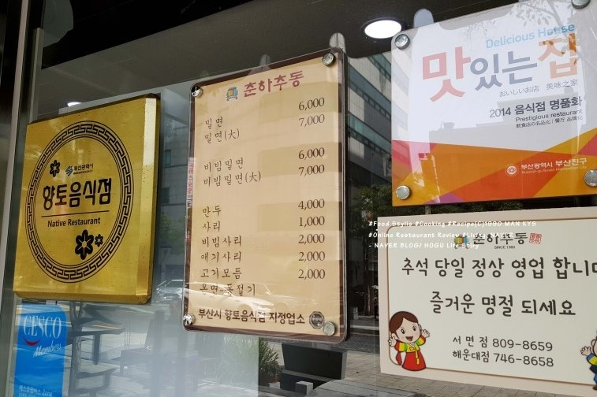
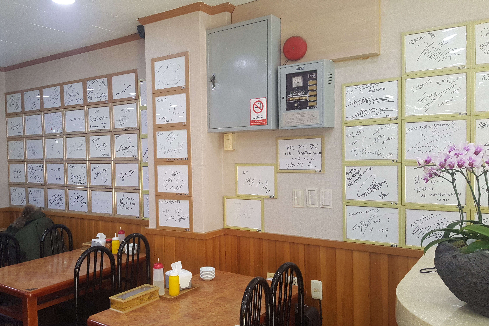
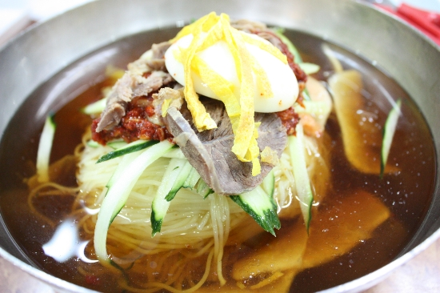
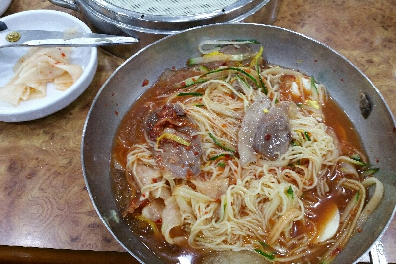
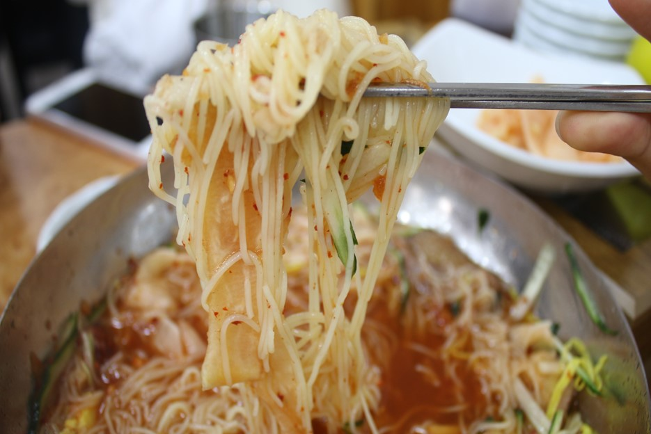
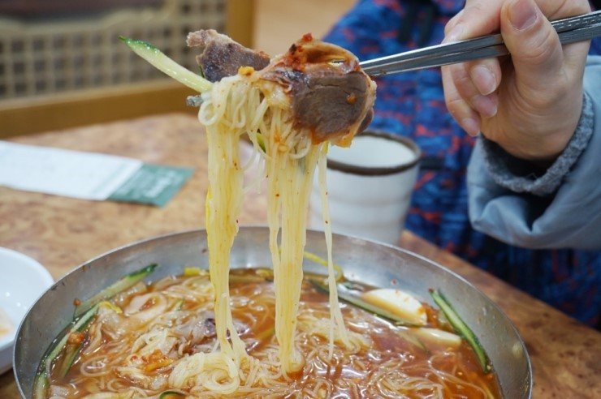

 
2호선 서면역 9번출구에서 영광도서를 지나 쭉 직진해서 오면 사진에 보이는 춘하추동 밀면집이
있다. 내부는 1층과 2층으로 구성되어있고 보이는 사진과 달리 식사시간이나 여름에는 자리가 없을 정도로 사람들이 많이 찾는다.

메뉴는 바깥에 저렇게 붙어있다. 주 메뉴는 밀면과 비빔밀면이 끝이며 만두와 고기모듬도 팔고 있다.
가게에 들어서면 오른쪽 편에 저렇게 수많은 유명인들의 사인들이 있어 메뉴 나오기 전까지 사인 구경하기 바빴던것같다.
 
어느 집이든 제일 잘 팔리는 물밀면, 고명들은 특이할것 없이 다른 집과 비슷하지만 고기가 생각보다 큼직하고 적당했지만
더 먹고 싶을땐 아까 메뉴에서 보았던 고기모듬을 시켜서 더 추가해서 먹을 수 있다.
 
한 입 먹을때 계피 향이 나서 향을 싫어 하는 분은 호불호가 많이 갈리겠지만
면에 육수가 잘 베어서 면과 국물이 따로 놀지 않고 쫀득하면서 부드러운 고기의 맛 덕분인지 정말 맛있었습니다.
따로 고기모듬을 시켜 면을 다 먹을때까지 같이 먹고싶을정도..
이 집도 오랫동안 장사를했고 사람들의 발길이 끊기지 않기 때문에 한번쯤 가보시는걸 추천합니다.
이 집도 오랫동안 장사를했고 사람들의 발길이 끊기지 않기 때문에 한번쯤 가보시는걸 추천합니다.